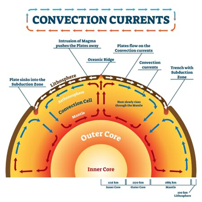
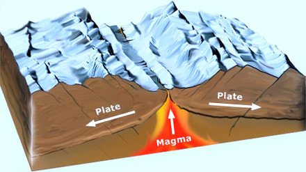
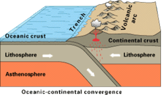

Sohrab Akhoundzadeh
Om eerst het geheel van de plaattektoniek te kunnen begrijpen, moet er eerst gekeken worden naar de convectiestromingen die hierbij een belangrijke rol spelen. Convectiestromingen zijn warmtestromen via een gas of een vloeistof die voornamelijk door temperatuur
–en/of drukverschil worden veroorzaakt. Deze convectiestromen vinden voortdurend in de binnenkant van de aarde plaats. Naarmate je steeds verder naar beneden komt, dus de aardkern nadert, neemt de temperatuur steeds toe. Bij de aardkern
zijn de temperaturen het hoogst. Deze hoge temperaturen zorgen ervoor dat het vloeibare magma dat zich bovenaan de aardkern bevindt (kernkorst) gaat stijgen. Het magma plant zich in alle richtingen van de aardkern af met een snelheid
v naar de aardkorst voort. Omdat de convectiestroom door een temperatuurverandering heeft plaatsgevonden, gaat het hier ook wel om een vrije- of natuurlijke convectie.
Naarmate je steeds verder naar beneden komt, dus de aardkern nadert, neemt de temperatuur steeds toe. Bij de aardkern zijn de temperaturen het hoogst. Deze hoge temperaturen zorgen ervoor dat het vloeibare magma dat zich bovenaan de aardkern bevindt (kernkorst)
gaat stijgen. Het magma plant zich in alle richtingen van de aardkern af met een snelheid v naar de aardkorst voort. Omdat de convectiestroom door een temperatuurverandering heeft plaatsgevonden, gaat het hier ook wel om een vrije-
of natuurlijke convectie.
Omdat stijgend magma in zijn voortplanting naar de aardkorst een steeds groter oppervlak van de aarde A inneemt (convectie-oppervlak) en dus afkoelt met ΔT (temperatuursverandering), wordt de warmtestroom J (hoeveelheid warmte die zich van A naar B verplaatst)
ook steeds groter. Het verband tussen deze warmtestroom, het convectie-oppervlak A en de temperatuurverandering ΔT is een recht evenredig verband en is te benaderen met de afkoelingswet van Newton:
J = h ∙ A ∙ ΔT
Hierin is h de warmteoverdrachtscoëfficiënt (in W m-2 K), A het convectie-oppervlak van de warmtestroom van de aardkern naar de aardkorst (in m2), ΔT de temperatuurverandering (in K) en J de warmtestroom (in W).
Zodra de convectiestromingen in de aarde lopen, bereiken ze op een gegeven moment de onderkant van de aardkorst. Omdat deze korst relatief gezien best dik is (35 tot 80 km diep), splitsten de convectiestromen zich in alle richtingen. Omdat de convectiestromingen
bij de aardkorst koeler zijn dan bij de kern, zullen de gesplitste convectiestromen weer dalen naar de aardkorst. Hier worden de convectiestromingen weer verwarmd door de aardkern en lopen ze als gevolg hiervan weer terug naar de onderkant
van de aardkorst. Dit verschijnsel vindt overal plaats in de aardkern, waardoor je te maken hebt met een constante convectie-circulatie. Zie onderstaande figuur:

Afbeelding 2
Convectiestromingen binnen de aarde
Convectiestromingen en plaattektoniek
Nu duidelijker is wat convectiestromingen zijn en hoe deze tot stand komen in de aarde, kan er nu worden gekeken naar de gevolgen van de convectiestromingen. Zoals er in afbeelding 2 kan worden gezien, splitsen de convectiestromingen zich onder de aardkorst
zich steeds in één richting. Dit zorgt ervoor dat het stuk van de aardkorst waar de convectiestroom betrekking op heeft, ook zal meebewegen in de richting van die stroom. Dit gebeurt heel langzaam (enkele millimeters of centimeters
verschuiving per jaar). Omdat de richtingen van de convectiestromen in elk gedeelte van de aarde verschillend zijn, bewegen de stukken aardkorst zich ook steeds verschillend. Dit kan tot de drie soorten platenverschuivingen (zie Mechanische
spanning en het Hypocentrum) leiden die dus zorgen voor natuurlijke aardbevingen.
De divergente plaatbeweging
In afbeelding 2 kunnen er aan de bovenkant van de aarde twee precies tegengestelde convectiestromen worden gezien. De ene stroom beweegt zich naar links, terwijl de andere stroom zich naar rechts beweegt. Omdat de aardkorst in de richting van de convectiestromen
meebeweegt, verschuift er dus een stuk van de aardkorst naar links en een stuk naar rechts. Hierdoor wordt dit stuk van de aardkorst als het ware uit elkaar getrokken. Dit noem je een divergerende beweging. Je kunt dit vergelijken
met het een stuk papier. Als je het stuk papier aan de ene kant naar links trekt en de andere kant naar rechts trekt, zal het stuk papier doormidden scheuren. Dit gebeurt dus ook bij de aardkorst. Deze trilling die bij deze scheur
vrijkomt, zorgt voor een aardbeving. Tijdens de divergente plaatbeweging ontstaat er een gat in de aardkorst waardoor nieuw magma omhoog kan komen (Examenoverzicht.nl, sd).

Afbeelding 3
De divergente plaatbeweging
De convergente plaatbeweging en vulkanisme
In afbeelding 2 is ook te zien dat de convectiestromen juist in elkaars richting kunnen lopen. Hierdoor zullen deze stukken van de aardkorst dus naar elkaar toeschuiven. Dit wordt de convergente plaatbeweging genoemd. Het gevolg hiervan is dat de twee
continentale aardplaten tegen elkaar opbotsen. Een aardplaat wordt hierdoor omhooggeduwd waardoor er een zogenaamd plooiingsgebergte ontstaat (Examenoverzicht.nl, sd).
Wanneer een van de op botsende platen een oceanische plaat is, schuift aardplaat met de grootste massa onder de aardplaat met de lichtste massa. Dit wordt ook wel subductie genoemd. Door de subductie ontstaat er een soort spleet in de aardkorst die meters
diep de aardmantel inloopt. De spleet wordt ook wel een diepzeetrog genoemd omdat deze diep in de oceaan ligt. De plek waar de subductie plaatsvindt wordt ook wel de subductiezone genoemd. Omdat de “onderduikende plaat” veel vloeistof
met allerlei verschillende natuurlijke bestanddelen bevat, ook wel hydrothermale vloeistoffen genoemd, kunnen deze bestanddelen opstijgen. Deze bestanddelen kunnen op hun beurt weer reageren met de omringende gesteenten. Dit proces
zorgt ervoor dat het smeltpunt van de gesteenten omlaag wordt gebracht, waardoor er magma kan ontstaan. Dit magma stijgt dan weer op en zorgt dus voor vulkanisme aan het aardoppervlak. (nl.wikipedia.org, 2022).

Afbeelding 4
De convergente plaatbeweging
De transforme plaatbeweging
Tenslotte kan er in afbeelding 2 worden gezien dat de convectiestromen ook langs elkaar, in tegengestelde richting kunnen stromen. In dit geval schuren de aardplaten dus ook langs elkaar. Dit wordt de transforme plaatbeweging genoemd. Door de grote wrijvingskracht
die door de schurende platen wordt veroorzaakt, komt er een hele grote hoeveelheid wrijvingsenergie vrij in de vorm van een aardbeving. Merk op dat de beweging van een transforme plaatbeweging alleen ééndimensionaal is, waardoor er
geen scheuren, gaten, etc. In de aardkorst worden veroorzaakt. Dit verklaart bijvoorbeeld waarom transforme plaatbewegingen nooit vulkanen of gebergten kunnen veroorzaken. Transforme plaatgrenzen komen op het land voor. Een voorbeeld
van een bekende transforme plaatgrens is de San Andreasbreuk in Californië (nl.wikipedia.org, 2022).